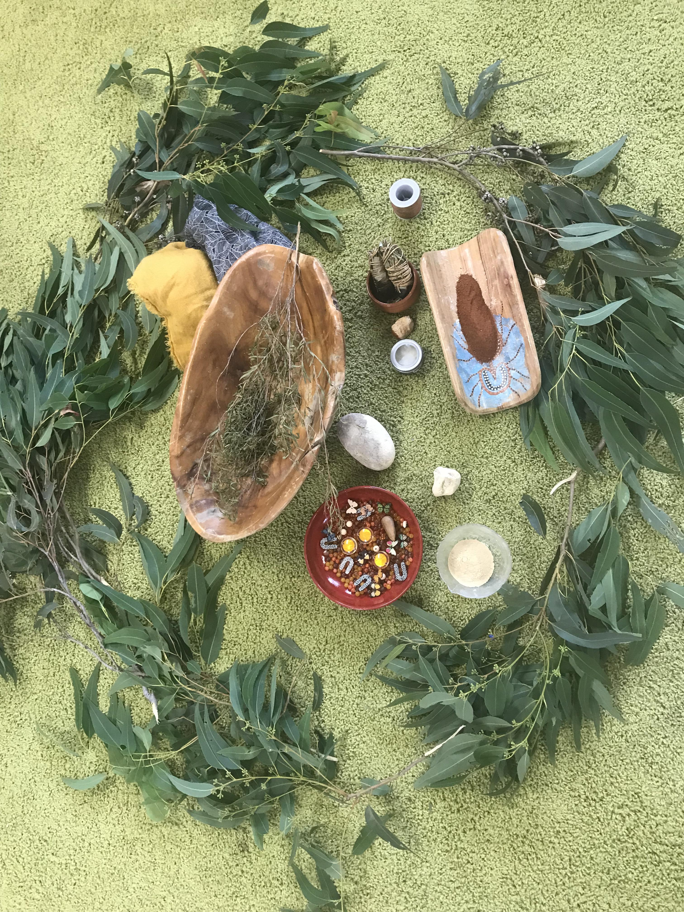

Restorative treatments to support your recovery after birth, nurturing your transition into motherhood.
About Postnatal Massage
The postnatal period is a time of profound transformation. Your body has accomplished something miraculous, and now it deserves gentle, nurturing care as it heals and adjusts to your new role as a mother.
Our postnatal massage is designed to support your physical recovery, ease muscle tension from feeding and carrying baby, and provide a peaceful space for you to relax and restore your energy.
Supports physical recovery after birth
Relieves tension from breastfeeding postures
Helps balance hormones postpartum
Promotes emotional wellbeing
Benefits
Gentle techniques help your muscles recover, reduce swelling, and support your body as it returns to its pre-pregnancy state.
Relief for neck, shoulder, and back tension that comes from feeding positions. We also offer techniques to support healthy milk flow.
Nurturing touch helps regulate hormones and provides a calming space during the sometimes overwhelming early weeks of motherhood.

Getting Started
For vaginal births, you can typically begin postnatal massage as early as one week after delivery, once you feel ready. For caesarean births, we recommend waiting until your scar has healed, usually around 6-8 weeks.
However, there's no "too late" to start. Whether you're in the first weeks postpartum or months into your motherhood journey, postnatal massage can still provide incredible benefits.
Vaginal birth: From 1 week postpartum
Caesarean birth: From 6-8 weeks postpartum
Baby-friendly sessions available
As a new mother, you give so much. Let us give back to you with healing, restorative postnatal massage.
Book Your Session